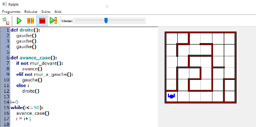

ENSEIGNEMENT D'EXPLORATION
SECONDE
Informatique et Création Numérique (I.C.N.)
Informatique et Création Numérique (I.C.N.)
Le projet consiste en la programmation d'un robot afin de lui faire réaliser une tâche complexe.
Par exemple : programmer un robot suiveur de ligne , ou un robot capable de sortir d'un labyrinthe, ou faire réaliser une chorégraphie avec un ou plusieurs robots.
Une progression d'activités doit permettre d'aborder des notions comme système d'exploitation, gestionnaire de fichier, architecture d'un système microprogrammé, algorithmique et programmation, composants d'un robot.
Les outils utilisés peuvent être un robot, un environnement de programmation graphique spécifique au robot utilisé ou environnement de programmation spécifique à un langage haut niveau.
Questionnements possibles :
Exemple du robot rurple :

Robot de la NASA :